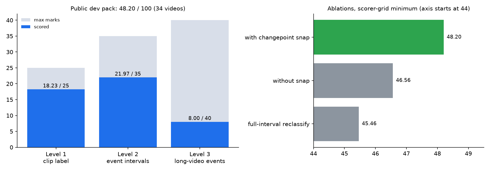
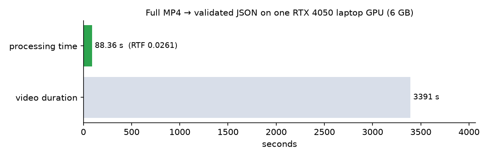

Real-time video anomaly detection on a 6 GB laptop GPU
Traffic and CCTV footage in; what went wrong (11 classes, from accidents and fire to wrong-way driving and fights) and when it happened out. The rules ban hosted models at runtime. So a frozen SigLIP2 encoder and a ~0.4M-parameter trained head run on the device, about 38× faster than real time.
System architecture
Measured results

Level 2 found 5 of 18 events. On video T028 it matched all four with IoUs 0.87, 0.67, 0.64 and 0.67. Over the scorer-sensitivity grid the result ranges from 48.20 to 54.49 (median 50.49), and a change had to raise the grid minimum before it shipped.

What was tried and rejected
| Experiment | Measured outcome | Decision |
|---|---|---|
| Temporal Conv/Transformer head trained on synthetic spliced sequences | P 0.39% · R 5.8% · FA on 39.3% of normal videos | rejected |
| Full-interval reclassification of merged windows | 45.46 grid-min (vs 48.20) | disabled |
| 768-config Level-3 window/threshold search | best = 48.20 (no gain) | no change |
| Changepoint edge snapping | +1.64 on grid-min | shipped |
Output
One JSON entry per video. Normal videos are an empty event list, Level-1 events carry no timestamps, and every entry records its own runtime. The schema is enforced in types.py and checked by validate.py before every upload.
Explanations come from deterministic templates, so the reasoning bonus never costs a network call or latency.
{
"video_id": "E014",
"events": [{
"class_name": "smoke",
"start_time_sec": 42.0,
"end_time_sec": 57.5,
"score": <head confidence>,
"explanation": "Thick smoke observed
from 42.0s to 57.5s."
}],
"runtime_metadata": {
"frames_processed": …,
"chunks_processed": …,
"end_to_end_internal_time_ms": …
}
}
Schema example. The times show the template format and are not a recorded prediction.
Why there is no upload-a-video demo
The detector needs a CUDA GPU, the trained head checkpoint and the competition footage, which isn't mine to redistribute. None of these fits on free hosting. Every number on this page is a measured result from ARCHITECTURE.md. Nothing is simulated.